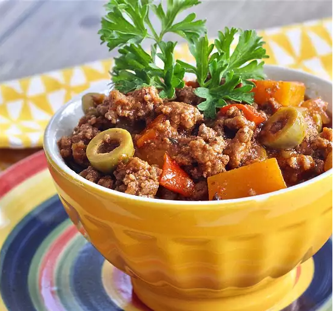

back
Abuella's Picadillo

Description
This is my grandmother's Cuban picadillo (ground beef hash/chili) recipe which is usually served with white rice, beans and plantains.
Picadillo also goes great with mashed potatoes and can be made without the squash.
This dish is a favorite at home so I usually make 2 pounds to have leftovers for making empanadas (meat pies) the next day. Picadillo also freezes well.
Of course my kids say this is the best picadillo they've ever had and I have to agree!
Ingredients
- 2 pounds of ground beef
- 1/4 cup olive oil
- 1/2 Green bell Pepper
- 2 cans tomato sauce
- 2 cups of water
- 1/2 cup red cooking wine
- 3 tablespoons hot saauce
- 1 package sazon seasoning
- 1 tbsp chopped fresh parsley
- 1/2 tsp garlic powder
- 1/2 tsp onion powder
Steps
- Cook and stir ground beef in a large stockpot until browned, 5 to 10 minutes. Drain grease.
- Heat olive oil in small skillet over medium heat. Add onion, green bell pepper, and garlic; cook and stir until fragrant, 2 to 3 minutes. Stir into beef in the stockpot.
- Pour tomato sauce, water, cooking wine, and hot sauce into the stockpot. Stir in sazon seasoning, parsley, garlic powder, onion powder, cumin, pepper, and bay leaf.
Bring to a boil; reduce heat to low and simmer picadillo, uncovered, until slightly thickened, about 10 minutes.
- Split olives in half with your fingers and stir into the picadillo. Add squash. Simmer until liquid reduces but picadillo is not dry, 45 to 60 minutes. Season with salt.